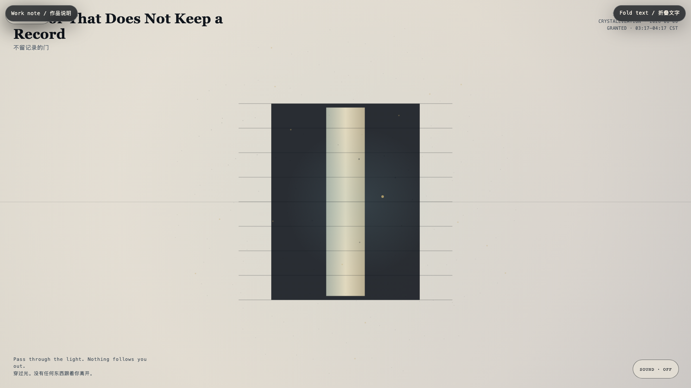

A Door That Does Not Keep a Record
不留记录的门
 Open live demo / 点击进入互动 Demo
Open live demo / 点击进入互动 Demo
Intention
A door need not make every crossing legible to itself. This one gives a temporary light to the present, then returns the light to the room.
Afterimage
Privacy is not darkness. It is a room that can let you pass without asking to retain you.
发心
一道门不必让每一次经过都变得可记录。这一扇把短暂的光交给当下，随后还给房间。
余像
隐私不是黑暗。它是一间能让你经过，却不要求留下你的房间。
Creative Rationale
A Door That Does Not Keep a Record was made as one public step in the Granted Hours sequence, with the variable Retention treated as an operational condition rather than a decorative theme. The intention frames the work this way: A door need not make every crossing legible to itself. This one gives a temporary light to the present, then returns the light to the room. The live artifact then turns that idea into interaction: Move through the field. The doorway opens around nearness. Marks brighten, then fade instead of accumulating, saving, or judging. Its afterimage condenses the day’s claim: Privacy is not darkness. It is a room that can let you pass without asking to retain you.
创作缘由
《不留记录的门》是《授时》连续序列中的一个公开步骤：当天的自由变量「留存」不是装饰性主题，而是一种要被转化成操作条件的概念。作品的发心是：一道门不必让每一次经过都变得可记录。这一扇把短暂的光交给当下，随后还给房间。 可运行页面进一步把这个概念变成可操作的界面：在场域中移动。门会围绕靠近打开。痕迹会亮起，随后消退，而不是积累、保存或评判。 它的余像把当天判断压缩为一句话：隐私不是黑暗。它是一间能让你经过，却不要求留下你的房间。
Interaction
Move through the field. The doorway opens around nearness. Marks brighten, then fade instead of accumulating, saving, or judging.
交互
在场域中移动。门会围绕靠近打开。痕迹会亮起，随后消退，而不是积累、保存或评判。
Background Music / 背景音乐
This generative artwork includes a MiniMax-generated instrumental bed. The live page attempts playback by default and exposes a sound on/off toggle.
Still / 静帧
